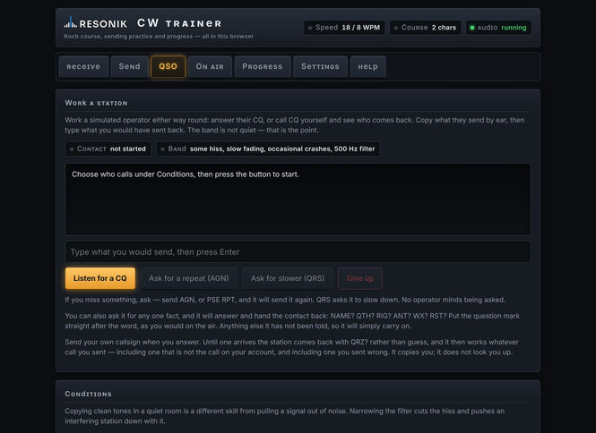
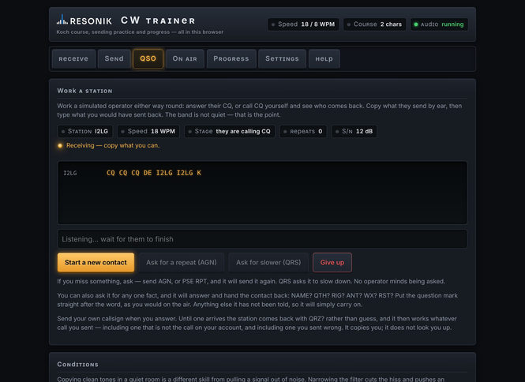

فهرست
فصل 6زبانهٔ QSO — تماس با اپراتور شبیهسازیشده
تماس اول بیش از گفتوگو، یک آیین است، و این خبر خوبی است: شکلش همیشه یکی است، پس میتوانید آن را خیلی پیش از آنکه بتوانید به مورس گفتوگو کنید یاد بگیرید. زبانهٔ QSO این آیین را با اپراتوری شبیهسازیشده روی باندی با نویز و فیدینگ اجرا میکند — و هرچه را از دست دادید تکرار میکند.




6.1شکل یک تماس کوتاه
CQ CQ CQ DE A65XY A65XY K صدا زدن هر کسی. «DE» یعنی «از». A65XY DE G4ABC G4ABC K کسی جواب میدهد: اول نشان شما، بعد نشان خودش، بعد «نوبت شما». G4ABC DE A65XY = GM ES TNX FER CALL = UR RST 579 579 = NAME HR MOHAMMAD MOHAMMAD = QTH DUBAI DUBAI = HW? G4ABC DE A65XY KN نوبت شما: گزارش سیگنال، نام، محل. «=» جداکنندهٔ BT است، و چیزها دو بار فرستاده میشوند چون شرایط هیچوقت بینقص نیست. … ایستگاه مقابل به همان شکل جواب میدهد … G4ABC DE A65XY = TNX FER QSO = 73 ES CUL = G4ABC DE A65XY SK خداحافظی. ۷۳ یعنی «بهترین آرزوها»؛ SK تماس را برای همیشه میبندد.
فصل ۱۰ فهرست کامل کدهای Q، اختصارها و پروساینهای بهکاررفته در اینجا را دارد.
6.2آماده کردن تماس
زیر Conditions، پیش از شروع:
سپس Listen for a CQ را بزنید (یا Open the band اگر شما صدا میزنید).
6.3جواب دادن، و صدا زدن
صدا زدن نیمهٔ سختتر است و همان که ارزش تمرین دارد. وقتی به CQ جواب میدهید، نشان تماس طرف را پیش از آنکه لازمش داشته باشید دو سه بار شنیدهاید. وقتی خودتان صدا میزنید، اولین چیزی که رخ میدهد نشان تماسی است که هرگز نشنیدهاید، یک بار، در نویز، بیهشدار — و باید درست بگیریدش، چون همهچیز پس از آن به آن بسته است. همین لحظه است که مردم سالها گوش میدهند بیآنکه هرگز CQ بزنند.
ایستگاهی که جواب میدهد نشانش را دو بار میفرستد و هیچچیز دیگر، دقیقاً مثل پاسخ واقعی. اگر نگرفتید، AGN بفرستید. همه میفرستند، حتی اپراتورهایی که چهل سال است این کار را میکنند. دکمههای Ask for a repeat (AGN) و Ask for slower (QRS) اینها را برایتان میفرستند.
ایستگاهی که با او کار میکنید چگونه است
ایستگاه همان لحظه ساخته میشود، اما نه تصادفی: نشان تماسش، نامی که میدهد و شهری که میگوید همه به هم میآیند. ایستگاهی که EA3 امضا میکند در اسپانیاست و نامی اسپانیایی دارد؛ آنکه JA1 امضا میکند در ژاپن است. با توجه به ساعتِ جایی که شما هستید سلام میکند، و فقط برای آنچه واقعاً فرستادید تشکر میکند — گزارشتان را بفرستید و برای گزارش تشکر میکند؛ فقط سلام بفرستید و تظاهر نمیکند. پس از ورود و گفتن نامتان در تبادل، شما را به نام صدا میزند.
6.4تایپ کردن پاسخ، یا کلید زدنش
زیر How you reply میتوانید سمت خودتان از تماس را به جای تایپ، روی کلید خودتان بفرستید. آنچه کلید میزنید همان لحظه دیکود و بالای پد نشان داده میشود — پس پیش از رفتن، میبینید ایستگاه مقابل چه خواهد شنید.
آنچه دیکودر میخواند همان است که فرستاده میشود. اگر نشان تماستان غلط دربیاید، غلط میرود و ایستگاه مقابل به نشانی که واقعاً فرستادید جواب میدهد. نکته همین است: روی هوا هیچکس ارسال شما را برایتان تصحیح نمیکند.
ارسال وقتی تمام میشود که شما بایستید. کلید را دو ثانیه رها کنید و میرود، همانطور که روی هوا میرود — یا اگر نمیخواهید منتظر بمانید Send it را بزنید. پد فقط وقتی زنده است که نوبت شماست؛ تا ایستگاه مقابل میفرستد، کلید شما خاموش است تا سایدتون خودتان روی آنچه میکوشید دریافت کنید نیاید.
نوع کلید و مُد iambic از زبانهٔ Send میآید و همان کلیدها و دکمههای ماوس اینجا هم کار میکنند. تایپ پیشفرض میماند: دریافت نیمهٔ سختتر است و باید بتوانید بیکلیدِ وصلشده هم تماس تمرین کنید.
اگر چیزی را از دست دادید
AGN (دوباره) یا PSE RPT (لطفاً تکرار) بفرستید، و QRS اگر صرفاً برایتان زیاد سریعاند. هیچ اپراتور کاردانی ذرهای ناراحت نمیشود. دو عادت که از همان تماس اول ارزش دارد: کمی آهستهتر از آنچه میتوانید دریافت کنید بفرستید، و نشان تماستان را با سرعتی بفرستید که میخواهید با آن جواب بگیرید.